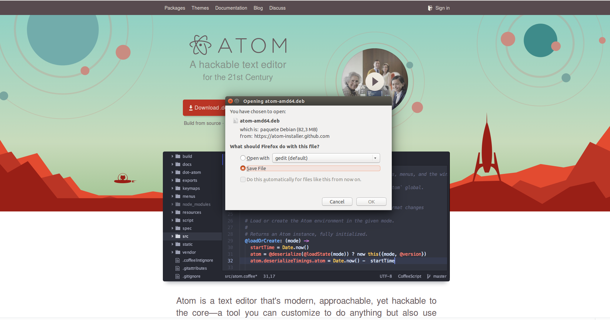

Atom
¿Qué es Atom?
Es un editor de código de fuente abierta para MacOS, Linux, y Windows con soporte para plug-ins escrito en Node.js, incrustando Git Control, desarrollado por GitHub. Atom es una aplicación de escritorio construida utilizando tecnologias web.
¿Cómo se instala Atom?
Para instalar el editor de texto Atom en Linux, hay que seguir los siguientes pasos:
1. Ir a la página de Atom y descargar el paquete
Primero hay que descargar el paquete que se encuentra en la página oficial de Atom. 
2. Instalar el paquete
Para proceder a instalar el paquete, se hará uso del programa dkpg, que se utiliza para manejar paquetes .deb. Con dpkg puedes instalar, remover y obtener información sobre cualquier paquete .deb.
Para instalar el paquete con dpkg usamos la opción -i o –install. El comando a ejecutar es:
dpkg -i <nombre_paquete_descargado>odpkg --install <nombre_paquete_descargado>
Nota: Es necesario tener privilegios de superusuario para realizar la instalación del paquete, por lo que se utiliza
sudo.